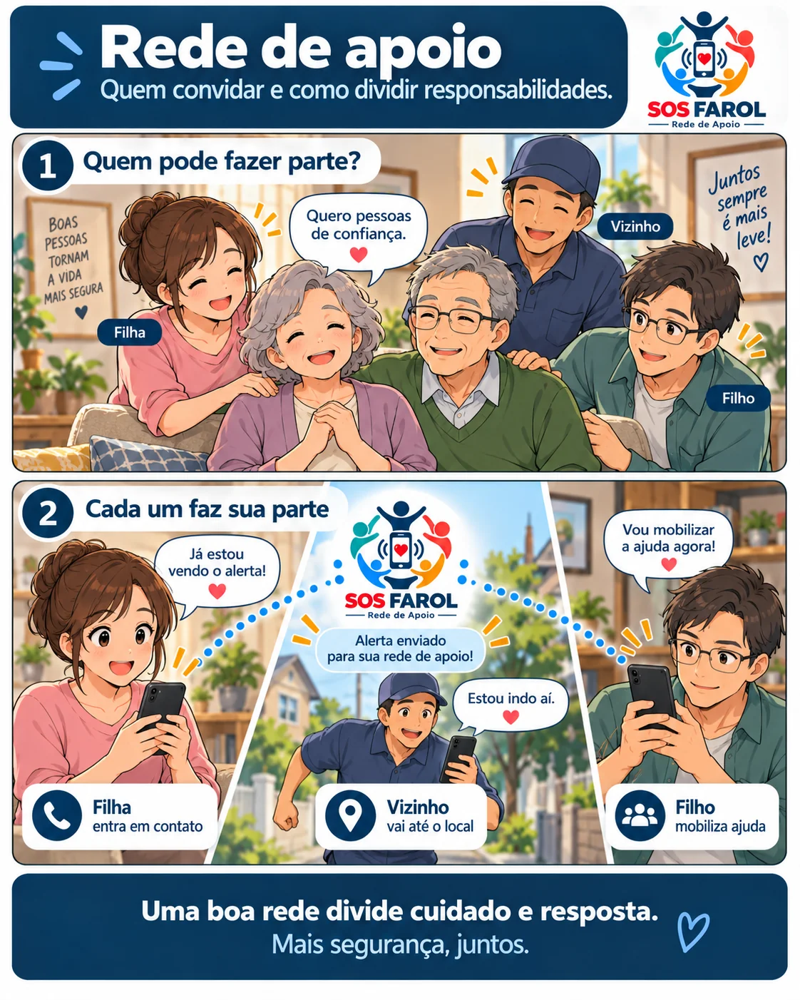

Rede de apoio é mais do que ter contatos salvos
Ter o telefone de filhos, irmãos ou vizinhos no celular é útil, mas isso ainda não é uma rede organizada. Uma rede de apoio funciona melhor quando as pessoas sabem que fazem parte dela e entendem o que podem fazer se um pedido de ajuda chegar.
Para um idoso que mora sozinho, essa organização pode fazer diferença justamente nos momentos em que ele não consegue resolver tudo sem ajuda.
Se um alerta chegar agora, quem está em condição de agir — e de que forma?
1. Comece com poucas pessoas e escolha bem
Uma rede não precisa começar grande. Duas ou três pessoas confiáveis já podem formar uma estrutura inicial muito mais útil do que uma lista longa de contatos que não sabem que foram incluídos.
Ao escolher quem convidar, pense em disponibilidade, proximidade e capacidade de agir. Não escolha apenas pelo grau de parentesco.
Quem está perto
Um vizinho, familiar ou amigo próximo pode chegar ao local mais rapidamente.
Quem acompanha
Pode ligar para o idoso, manter contato e informar os demais membros da rede.
Quem mobiliza ajuda
Pode acionar o serviço adequado à situação quando isso for necessário.
Quem conhece a rotina
Ajuda a interpretar melhor se determinada situação é realmente fora do normal.
2. Misture proximidade com vínculo de confiança
Nem sempre o filho mais próximo emocionalmente é a pessoa mais próxima fisicamente. Por isso, uma boa rede costuma combinar diferentes perfis.
Um filho pode morar em outra cidade e acompanhar decisões importantes, enquanto um vizinho ou familiar próximo consegue chegar rapidamente até a residência.
O melhor desenho é aquele em que cada pessoa cobre uma necessidade diferente.
Quem pode fazer parte?
- Filhos, irmãos ou outros familiares de confiança.
- Vizinhos próximos e conhecidos há bastante tempo.
- Amigos que frequentam a casa ou conhecem a rotina.
- Cuidadores ou profissionais que acompanham a pessoa.
- Pessoas que tenham chave da residência, quando isso tiver sido combinado.
- Alguém que more ou trabalhe a poucos minutos do local.
3. Combine responsabilidades antes de precisar delas
O pior momento para decidir quem fará o quê é durante uma situação de estresse. Por isso, a rede deve ter combinações simples feitas com antecedência.
Não é necessário criar um protocolo complicado. Bastam algumas regras práticas.
Exemplo de divisão de tarefas
- Pessoa A: tenta contato imediatamente.
- Pessoa B: se estiver perto, vai ao local.
- Pessoa C: se a situação exigir, aciona o serviço apropriado e acompanha a comunicação.
Se todos recebem o mesmo alerta, a rede pode se organizar rapidamente sem depender de uma única pessoa.
Mesmo uma combinação simples reduz esse risco: quem viu primeiro responde, quem está mais perto se desloca e outra pessoa acompanha a situação.
4. Respeite a vontade e a privacidade do idoso
A pessoa protegida deve saber quem faz parte da rede e, sempre que possível, participar da escolha. Rede de apoio não deve significar perda automática de privacidade.
Explique para que cada recurso será usado, quando a rede será avisada e quais informações podem acompanhar um pedido de ajuda.
Quanto mais transparente for essa combinação, maior tende a ser a aceitação da tecnologia e da própria rede.
5. Teste a rede antes de depender dela
Depois de formar a rede, faça um teste real. O objetivo não é apenas verificar se o aplicativo funciona, mas se as pessoas sabem reconhecer e responder ao alerta.
Teste em quatro etapas
- Faça um pedido de ajuda de teste no celular da pessoa protegida.
- Confirme se todos os membros previstos receberam o alerta.
- Peça para cada pessoa dizer o que faria ao receber um alerta verdadeiro.
- Corrija contatos, permissões ou combinações que tenham causado dúvida.
Esse teste também ajuda a família a perceber se falta alguém geograficamente mais próximo ou se existe excesso de dependência de uma única pessoa.
6. Crie uma regra simples de resposta
Uma rede funciona melhor quando todos conhecem uma lógica básica. Por exemplo:
- Quem receber o alerta tenta contato.
- Quem estiver mais perto informa que está indo.
- Outra pessoa acompanha a comunicação.
- Se houver risco ou necessidade, alguém aciona o serviço oficial adequado.
- Quando a situação estiver resolvida, a rede é informada.
O objetivo não é substituir profissionais de emergência. É reduzir o tempo entre perceber que alguém precisa de ajuda e mobilizar as pessoas certas.
Uma pessoa pede ajuda. A rede inteira fica sabendo.
O SOS Farol permite organizar familiares e amigos em uma rede privada. Quando a pessoa protegida aciona um pedido de ajuda, os membros da rede podem receber o alerta e coordenar a resposta.
O pedido pode ser iniciado por voz, movimento ou botão, conforme a configuração utilizada. O aplicativo é uma ferramenta complementar e não substitui serviços oficiais de emergência.
7. Revise a rede de tempos em tempos
Pessoas mudam de endereço, horários mudam e alguns contatos deixam de estar disponíveis. Por isso, vale revisar a rede periodicamente.
Uma revisão rápida pode verificar se os contatos continuam corretos, se todos ainda desejam participar e se a divisão de responsabilidades continua fazendo sentido.
Não basta cadastrar contatos. As pessoas precisam saber que fazem parte da rede, reconhecer o alerta e entender como podem ajudar.